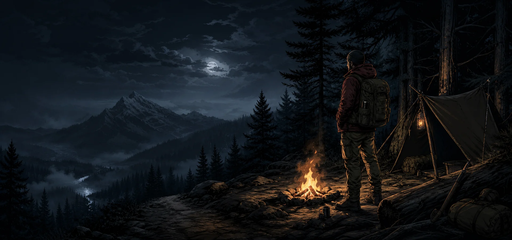
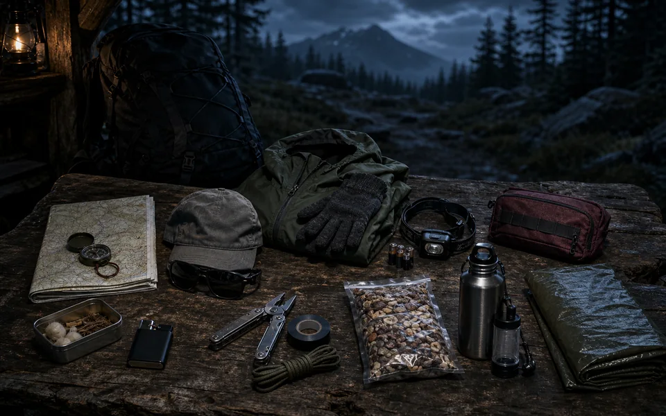
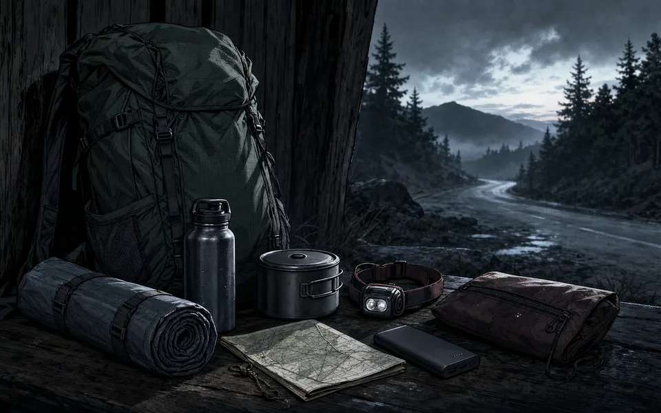
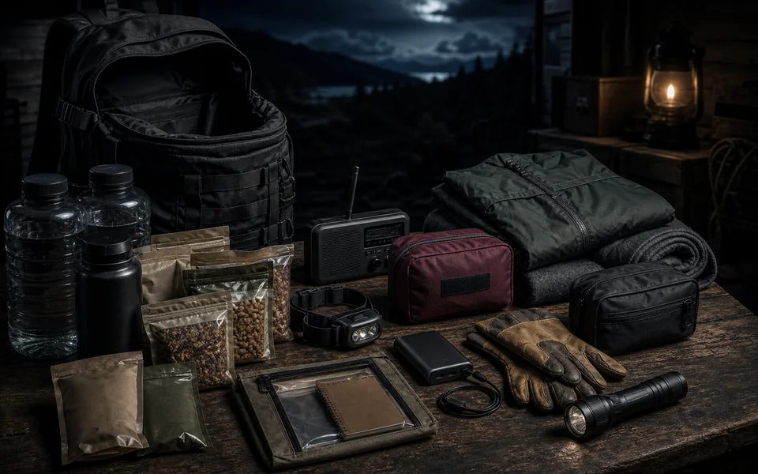
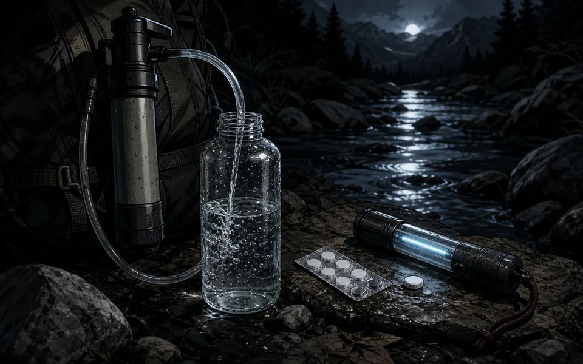
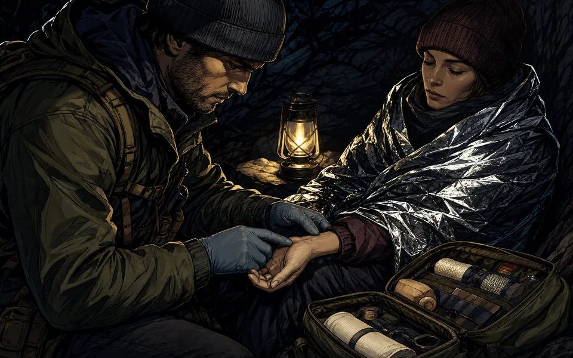
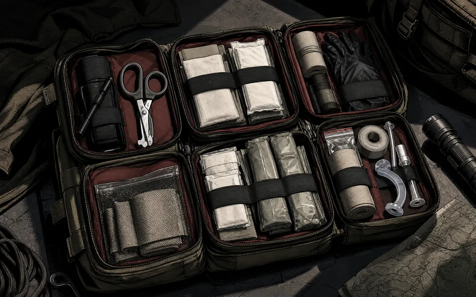
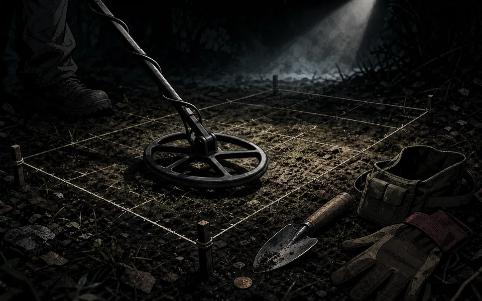
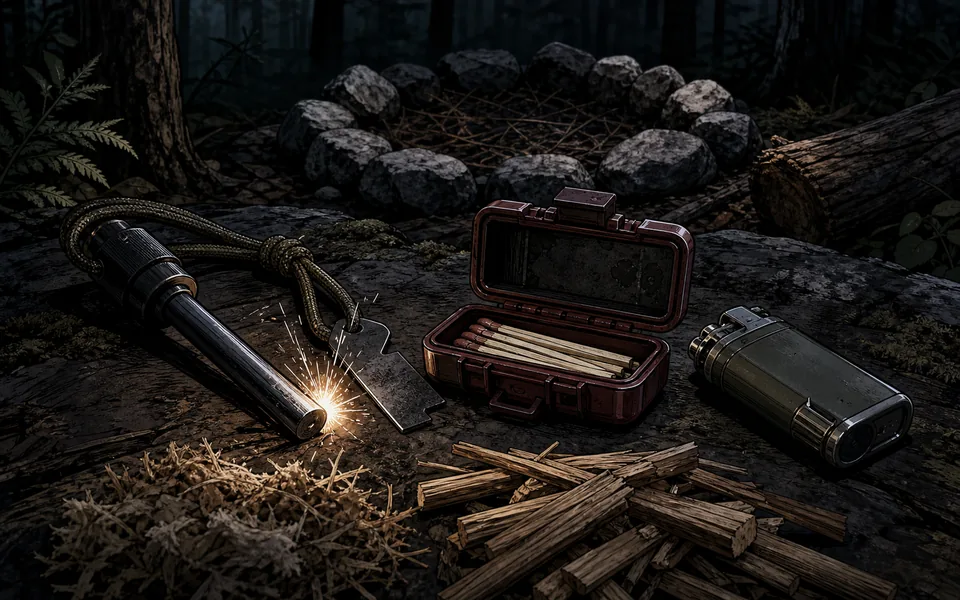

The Practical Preparedness Blueprint
Build a risk-first household system around alerts, evacuation decisions, supply layers, accessibility, wildfire safety, practice, and recovery.
Read the Blueprint →Practical, testable skills with the biology and physics underneath. Each guide includes a field exercise.
Start with fire and water, then move through trauma care, mobility, and exploration. These pieces build a dependable outdoor system.

Build a risk-first household system around alerts, evacuation decisions, supply layers, accessibility, wildfire safety, practice, and recovery.
Read the Blueprint →
Build navigation, weather, injury, hydration, repair, and emergency-shelter systems for every outdoor outing.
Pack the Ten Systems →
Prevent navigation errors, use map-and-compass fundamentals, and decide when to retrace, stay put, signal, or request rescue.
Build Your Navigation Plan →
Choose a safer site, insulate from the ground, block wind and precipitation, and avoid common shelter hazards.
Build a Shelter System →
Plan a household-scaled home reserve, portable evacuation kit, and grab pouch—then use the interactive printable checklist.
Build Your Kit →Ignition physics in freezing, wet conditions. Fatwood resin science, fire lays in snow, and a timed boil test drill.
Read Guide →
Filters, chemical treatments, and UV—explained by biological mechanism. Includes a clarity vs. contact-time exercise.
Read Guide →
Recognize compensation before collapse. Hemorrhage control, heat preservation, and evacuation timing.
Read Guide →
Tourniquets, hemostatics, packing layout, and practice drills—with biology-backed rationale for each component.
Read Guide →Shelter, water, heat, and comms—modular systems for open-ended routes. Includes a 48-hour load test.
Read Guide →
VLF vs. PI, signal interpretation, and ethical recovery. Practice a 1×1 m sweep grid for precision.
Read Guide →
Core ignition methods, tinder prep, and safe fire lays that scale from solo to basecamp.
Read Guide →What should we write next—splinting, stove fuel safety, route planning, or beach detecting?
Tell Us →